|  | |||
|---|---|---|---|
DUELISTLes duellistes excellent dans les combats en un contre un. Ils sont mobiles, rapides et ont souvent des capacités qui leur permettent d'entrer rapidement dans le combat et de faire des dégâts importants à leurs adversaires. Agents du rôle Duelist : Phoenix, Jett, Reyna, Raze |
INITIATEURLes initiateurs sont des experts en initiation de combats. Ils ont des capacités qui leur permettent d'ouvrir la voie à leur équipe en découvrant et en neutralisant les ennemis avant que les combats ne commencent réellement. Agents du rôle Initiator : Breach, Sova, Skye |
SENTINELLes sentinelles sont des défenseurs de l'équipe. Ils sont capables de protéger leurs coéquipiers en utilisant des capacités de guérison, de création de barrières ou de bloquer les lignes de vue ennemies. Agents du rôle Sentinel : Sage, Cypher, Killjoy |
CONTROLERLes contrôleurs sont des spécialistes du contrôle de zone. Ils peuvent limiter les mouvements des ennemis en utilisant des capacités qui créent des obstacles, des zones de danger ou qui détectent les positions ennemies. Agents du rôle Controller : Viper, Brimstone, Omen, Astra |